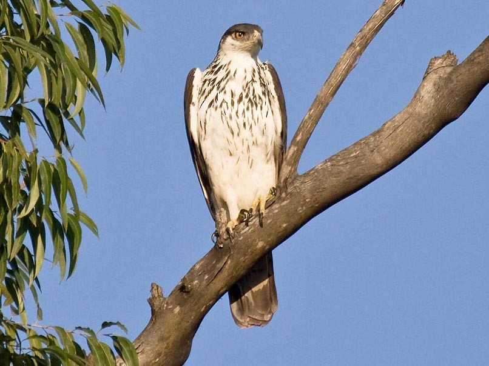

Aquila spilogaster
The large African Hawk eagle generally lays a clutch of up to one or two eggs. It is a powerfully built raptor and preys on small to medium sized mammals and birds mostly sometimes taking reptiles and various other prey as well.